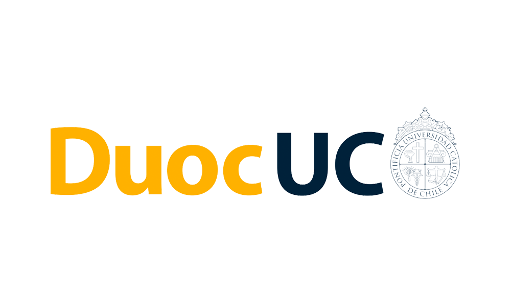
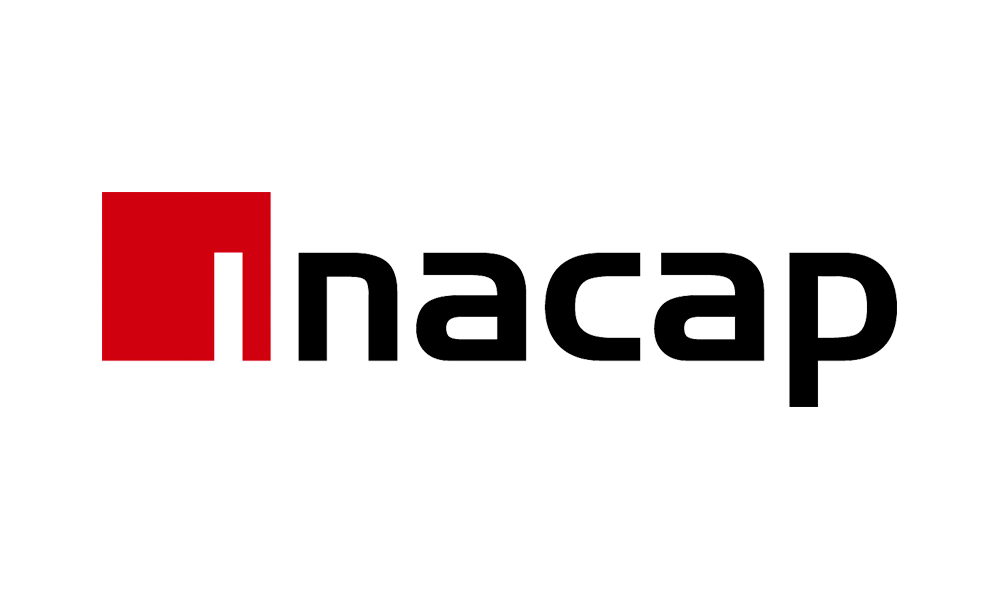
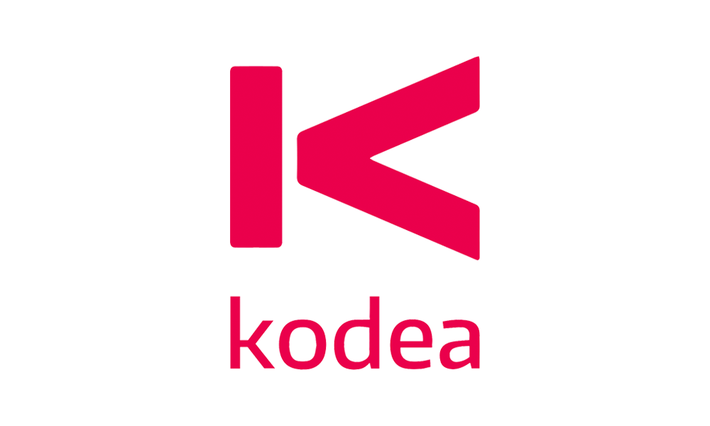
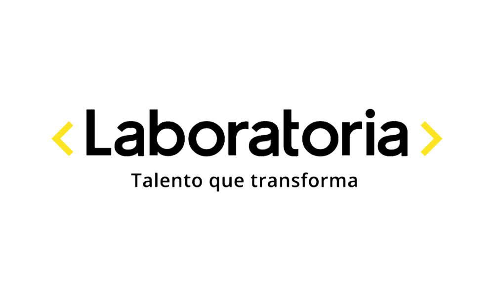
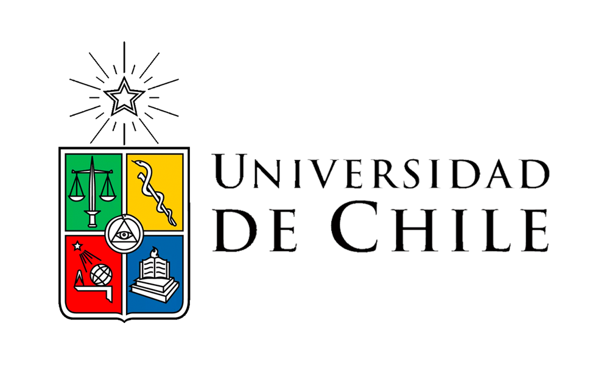
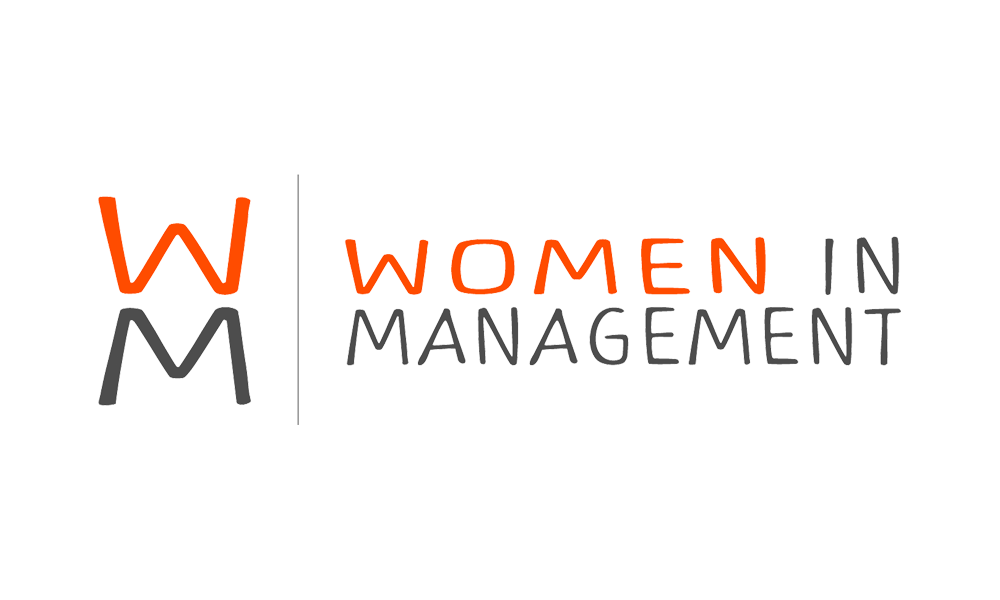

¿ QUÉ ES MUJERES EN TECNOLOGÍA?
Mujeres en tecnología es una mesa de trabajo abierta, diversa e inclusiva, para personas e instituciones que quieran apoyar la participación femenina en las ciencias y en la industria tecnológica, que busca consolidar, visibilizar, potenciar y ampliar iniciativas pro mujeres en tecnología.





